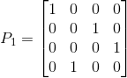

首先看下置换矩阵。通过之前章节相信各位对置换矩阵有了一定的了解，那么这时有一个问题，如果只能交换行序，那么对于一个n*n的矩阵，其总共有多少种交换方式？（可以看成是一种排序问题）
结果是n!（n的阶层）种。
换句话说，也就是有n!个置换矩阵存在，而由n!个置换矩阵组成的这组矩阵集，有个很有意思的现象，其内部的各个矩阵无论怎么相乘，或者取逆矩阵，结果都能在这组矩阵集里找到对应的解。换句话说，该矩阵集包含了该矩阵所有的行置换情况。
另外，置换矩阵还有一个重要的性质，其转置等于其逆矩阵！
举个例子证明下，对于一个2,3行置换后3,4行再转换的置换矩阵P1：

那么其逆矩阵也是置换3,4行后2,3行再转换的置换矩阵P2：
不难验证P1*P2=I，同时也可看出P2是P1的置换矩阵。
接下来讲下置换矩阵，其有一个很重要的公式：
而对于对称矩阵，其转置等于本身。而更常见的形式是矩阵A乘以矩阵A的转置得到一个对称矩阵。其证明如下：
对于对称矩阵，在机器学习经常能见到，这里先不细讲，以后遇到再细讲。下一章讲讲AX=0？